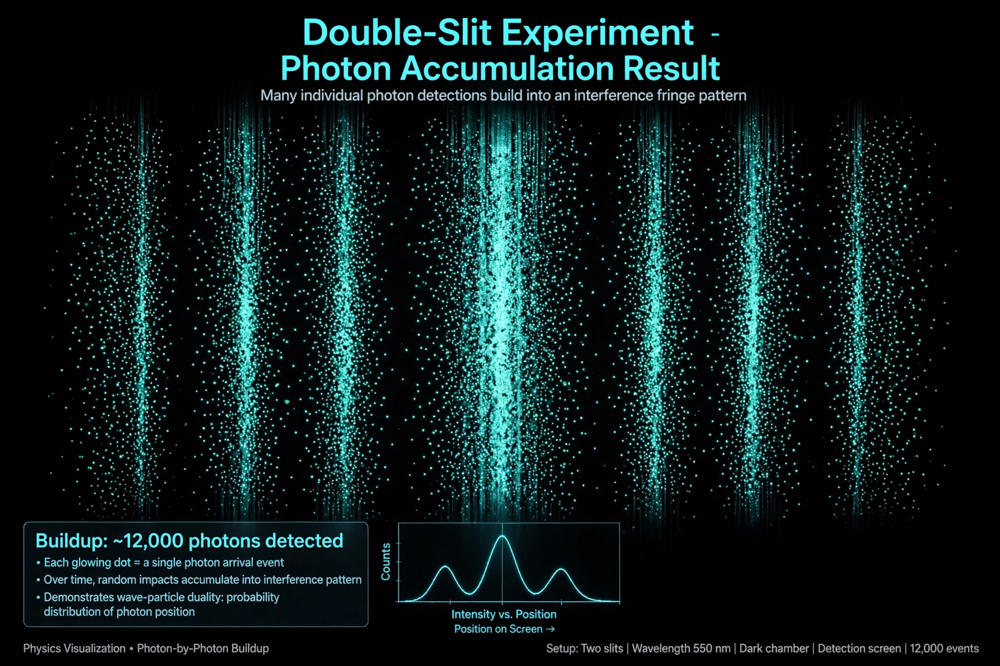

Quantum mechanics

[Image: interference pattern building up dot by dot in a double-slit experiment with electrons]Quantum mechanics is a fundamental theory of physics that describes the behaviour of nature at and below the scale of atoms. It departs radically from classical physics: energy, momentum and other quantities are often restricted to discrete values (quantisation), objects can exhibit characteristics of both waves and particles (wave–particle duality), and outcomes of measurements are fundamentally probabilistic, described by a wavefunction whose evolution is given by the Schrödinger equation.
Quantum mechanics, together with general relativity, forms the foundation of modern physics, and underlies chemistry, materials science, electronics and much of technology — transistors, lasers, MRI scanners and atomic clocks all depend on it.
History
The theory grew from problems classical physics could not solve: black-body radiation (Planck, 1900, introducing quanta), the photoelectric effect (Einstein, 1905), atomic spectra (Bohr, 1913) and Compton scattering. In 1925–26 Heisenberg, Born and Jordan created matrix mechanics while Schrödinger created wave mechanics; Dirac and others unified them. Heisenberg's uncertainty principle (1927) set a fundamental limit on simultaneous knowledge of position and momentum.
Key concepts
- Wavefunction and superposition — a system exists in a combination of states until measured; Schrödinger's cat thought experiment dramatises the puzzle.
- Entanglement — particles can be correlated so that measuring one instantly constrains the other, the "spooky action at a distance" Einstein objected to; Bell's theorem and experiments show no local hidden-variable theory reproduces all predictions.
- Tunnelling — particles can pass through barriers they classically could not surmount; used in flash memory and scanning tunnelling microscopes, and essential to fusion in the Sun.
- Quantisation — electrons in atoms occupy discrete energy levels, explaining the spectral lines first mapped in the science of the 19th century.
Interpretations and open questions
Physicists disagree on what the mathematics means: the Copenhagen interpretation, many-worlds, pilot-wave theory and other interpretations make the same predictions but tell different stories. Quantum mechanics also remains unreconciled with general relativity. Meanwhile its applications expand into quantum computing, quantum cryptography and precision sensing, pursued by labs and companies worldwide and summarised for the public by journals such as Nature.